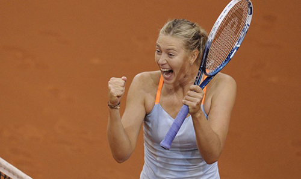

Sharapova vence en Stuttgart y suma su segundo título del año
TORNEO DE STUTTGART

La rusa Maria Sharapova puso fin a una dura semana de trabajo con su segundo triunfo consecutivo en el torneo de Stuttgart, al vencer a la china Na Li en la final, por 6-4 y 6-3.
Después de ganar sus tres partidos anteriores en tres sets, la número dos del mundo se impuso a su rival en solo dos sets y en 92 minutos, para obtener el título 29 en su carrera y el segundo esta temporada (Indian Wells).
Con la victoria en el torneo alemán, Maria se convierte en la primera jugadora en conseguir el triunfo dos años consecutivos, después de la estadounidense Lindsay Davenport (2004-05), sumando su victoria 16 consecutiva sobre tierra batida, desde Roma el pasado año.
En una repetición de las semifinales del Abierto de Australia de este año, donde Li propinó una gran paliza a la rusa (6-2 y 6-2), los papeles se intercambiaron, y Sharapova controló mejor los momentos para imponerse por novena vez en 14 enfrentamientos.

 Tennis
Tennis